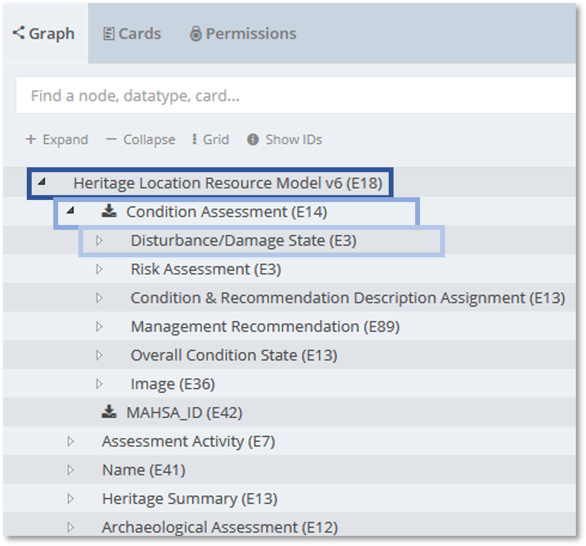
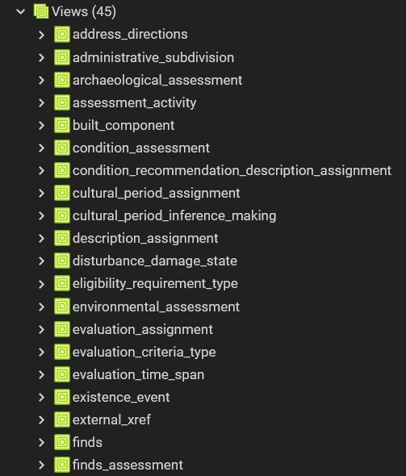
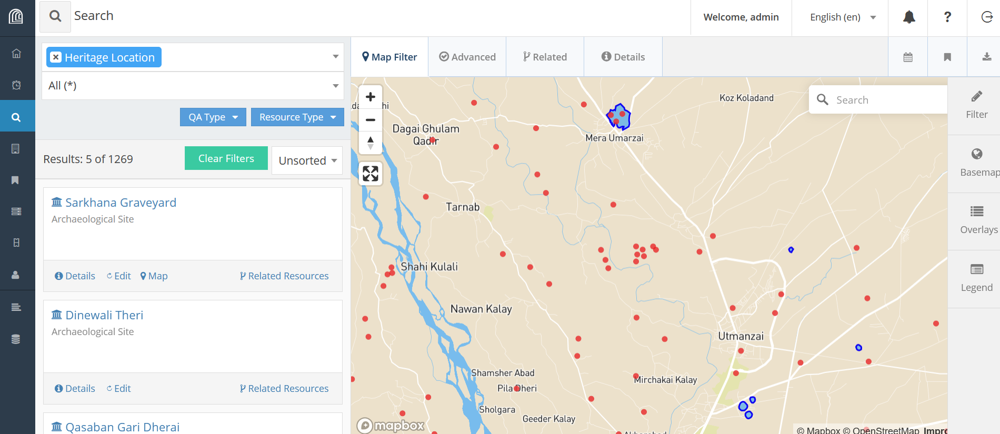
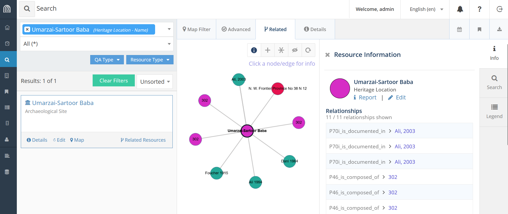
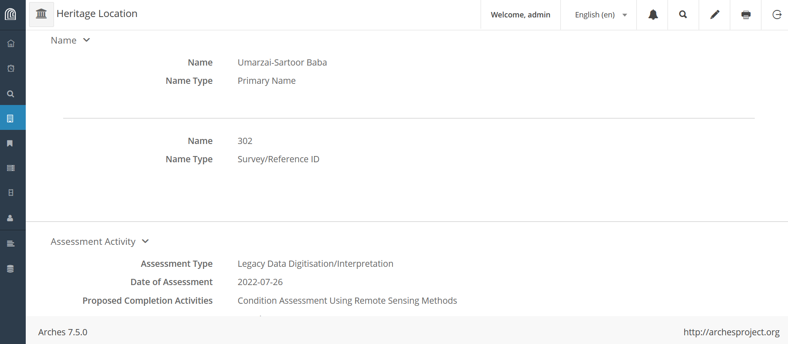

SQL Data Import Pipeline for

Presented By: Junaid Abdul Jabbar


- Documentation of the endangered archaeology and cultural heritage of the Indus River Basin and surrounding areas using the Arches platform
- Collaborative research output with development and training programmes
- Started with Arches v5.1, currently on v7.5.0, upgrading to v7.6
Challenges
- Complex site records with attribute and location variations

Challenges
- Nested resource model and data import

Challenges
- Collaborative working in a GIS environment with multiple reference layers to compare attributes and location to collate data

Nested Data Import Options
- JSON Import - primarily intended for transferring business data between arches instances.
- SQL Import - much more flexible and faster than csv data import. Especially useful to migrate data from a SQL database into Arches.
Foreign Data Wrapper
-
To prepare for remote access using postgres_fdw:
- Install the postgres_fdw extension with CREATE EXTENSION
- Create a foreign server object using CREATE SERVER for remote database, specifying connection information.
- Create a user mapping with CREATE USER MAPPING for database user allowed to access the foreign server, specifying remote user credentials.
- Create a foreign table using IMPORT FOREIGN SCHEMA for each remote table, ensuring columns match the remote table.
Create schema for resource models
Heritage Location Schema
-

Resource Model Schema - Instances
Arches String - PostgreSQL JSONB
Arches String - PostgreSQL JSONB
Arches String - PostgreSQL JSONB
Import Strings
Import URL
Import Concepts
| valueid | value |
|---|---|
| 60e5e6bd-553c-4928-8cf6-c86c96f982a4 | Alternate Name(s) |
| e42c8f5c-1533-412b-bd74-1ad7c4c5d526 | Primary Name |
| bf229f6b-f958-4413-9a81-d113eb368206 | Survey/Reference ID |
| 33216af5-1821-4662-8589-4b9ec181e0aa | Village Name |
Import Concepts
Function for Concept-list
Import Concept-list
Import Resource Instance
Import Resource Instance
Import Resource Instance List
Import Resource Instance List
Import Nested Data - Condition Assessment
Import Nested Data - Condition Assessment
Import Geometries
Sample Imported Data
-

Sample Imported Data
-

Sample Imported Data
-

SQL Import
- More control over data import
- Can update, delete, insert for single branches or nodes
- Faster once the SQL queries and functions are ready
- Require data validation checks
- Authoritative and Provisional data
New Features
- GeoJSON URL, fix for basic HTTP authorization
- QGIS Plugin for Arches
- Bulk Data Manager, tile and branch excel imports
- New permissions framework, groups and sets